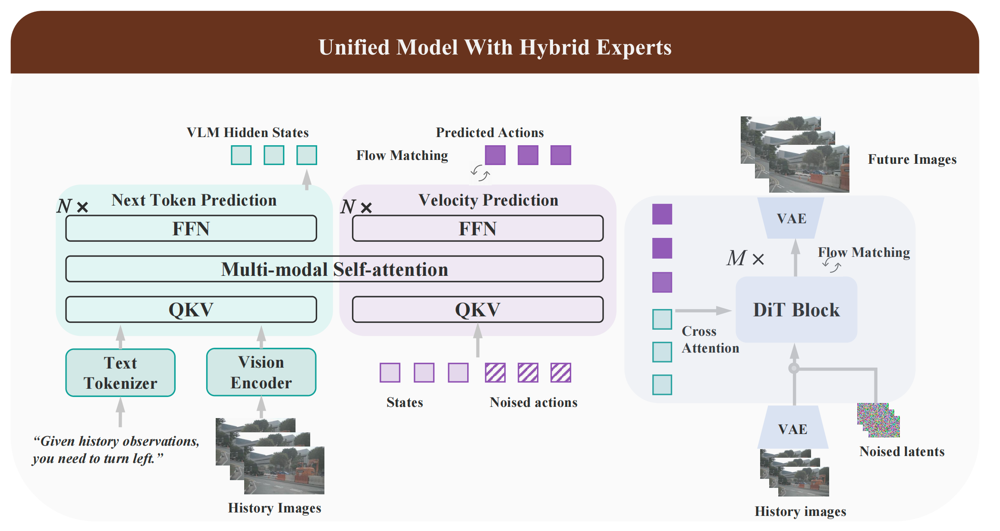
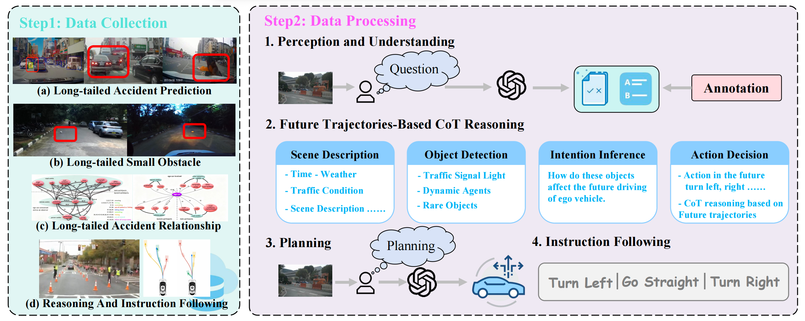
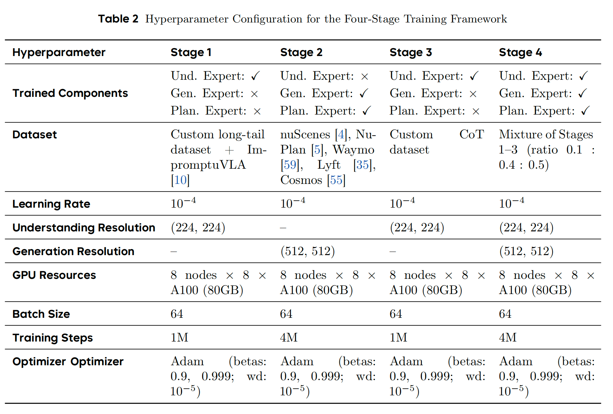
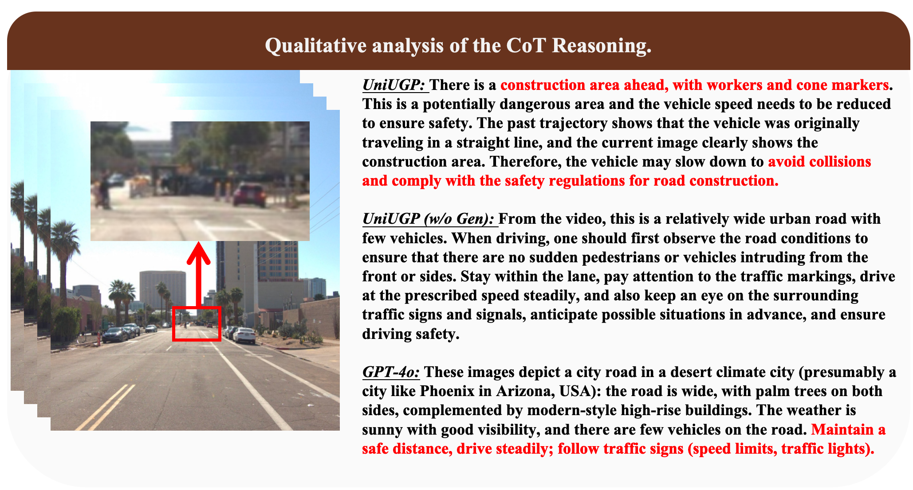
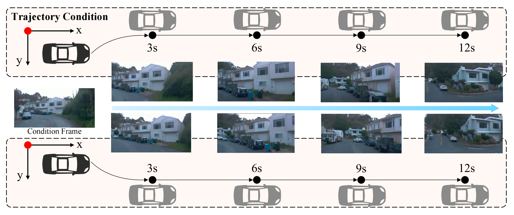
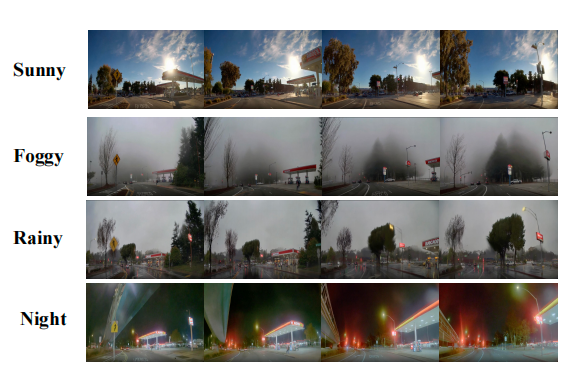

Autonomous driving (AD) systems struggle in long-tail scenarios due to limited world knowledge and weak visual dynamic modeling. Existing vision-language-action (VLA)-based methods cannot leverage unlabeled videos for visual causal learning, while world model-based methods lack reasoning capabilities from large language models. In this paper, we construct multiple specialized datasets providing reasoning and planning annotations for complex scenarios. Then, a unified Understanding-Generation-Planning framework, named UniUGP, is proposed to synergize scene reasoning, future video generation, and trajectory planning through a hybrid expert architecture. By integrating pre-trained VLMs and video generation models, UniUGP leverages visual dynamics and semantic reasoning to enhance planning performance. Taking multi-frame observations and language instructions as input, it produces interpretable chain-of-thought reasoning, physically consistent trajectories, and coherent future videos. We introduce a four-stage training strategy that progressively builds these capabilities across multiple existing AD datasets, along with the proposed specialized datasets. Experiments demonstrate state-of-the-art performance in perception, reasoning, and decision-making, with superior generalization to challenging long-tail situations.
UniUGP is a unified Hybrid Expert framework for end-to-end autonomous driving, with three core experts (Understanding, Planning, Generation). It makes full use of pre-trained VLMs and generative models’ existing knowledge, uses the MoT architecture and reflected flow for advanced trajectory planning, and retains pre-trained video models’ visual causal ability when expanding generation capabilities.
Fig.1 Illustration of UniUGP, a unified model with three hybrid experts. The understanding expert performs the next-token prediction for causal reasoning. The planning expert forms a MoT architecture with the understanding expert, and performs the velocity prediction in flow matching for production future actions. The generation expert is cascaded as a world model to produce future videos.
To address the limitation of existing driving benchmarks (focused on structured scenes/simulators while ignoring long-tail events), we integrated heterogeneous datasets (Waymo-E2E, DADA2000, LaF, StHa, SOM, AADV) into a unified framework aligned with four cognitive competencies: Perception & Understanding, Causal CoT Reasoning, Planning & Decision-Making, and Instruction Following. For Perception & Understanding, three subtasks were designed: 1) Small long-tailed objects: True/False questions built from dataset segmentation labels, with diverse question templates to boost generalization; 2) Long-tailed accident prediction: True/False questions based on dataset abnormal labels and timestamps, using varied prompts; 3) Long-tailed accident relationship: Multiple-choice questions where distractors are filtered/selected (random 2/4 options), shuffled, and mapped to A/B/C/D labels, with questions asking to describe the current situation.
For Causal CoT Reasoning, we leveraged future image sequences and ground-truth ego trajectories to ensure reasoning aligns with physical outcomes, requiring the chain to cover scene context, key interactive agents, their potential intentions, and justifications for the final driving action. Advanced VLMs were prompted with future planning results to generate accurate CoT, which was further manually calibrated.
Dataset Construction Pipeline. This figure depicts the pipeline of data collection (integrating multiple challenging driving datasets) and data processing (featuring four task categories: understanding, chain-of-thought, planning, and instruction following) to train and assess the cognitive abilities of end-to-end autonomous driving models within a unified QA framework.
We propose a four-stage sequential training framework: Stage 1 trains only the Understanding Expert on annotated long-tail data and ImpromptuVLA to build diverse driving scenario understanding; Stage 2 trains the Generation and Planning Experts using trajectory-equipped datasets (nuScenes, NuPlan, etc.) for visual dynamics and motion planning; Stage 3 fine-tunes the Understanding Expert with a self-annotated CoT dataset to integrate causal reasoning; Stage 4 jointly trains all three experts with mixed data from Stages 1–3.
Reasoning ability.
The world model forces VLA to learn visual causal inference, particularly focusing on distant objects to generate better future frames. This enables the VLA model to predict potential dangers in advance, thereby ensuring driving safety.
The ablation experiment on the absence or presence of world model knowledge. The world model enables the VLA to pay more attention to future causal relationships, thereby focusing on the semantics of distant objects.
Generating ability.
UniUGP can generate trajectories and weather control as shown in the figure. This proves that the generation capability of our method is effective.
Trajectory-controlled generation visualization. By modifying the trajectories input into the generation model, we can control the generation of future frames in the video. This demonstrates the controllability of our generation technology.
Video generation visualization with controllable weather conditions. Our model can generate videos of different weather conditions, which proves the efficiency of our generation model.